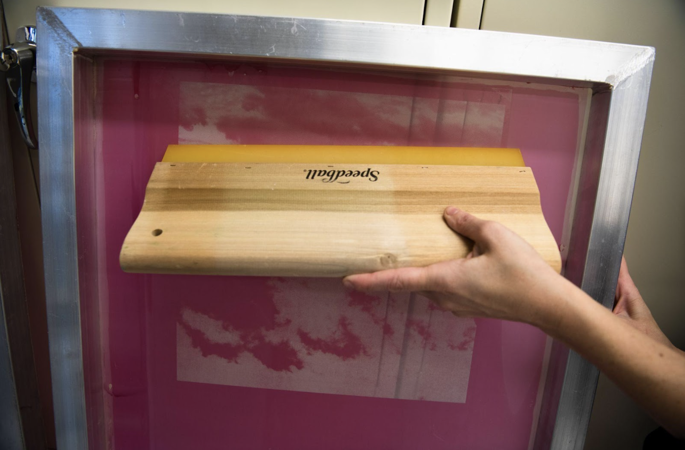

05

A
B
C
- Affix the screen to the screen-printing table using clamps available on the table or on a laminate board. Make sure your laminate board is securely attached to the table before use.
- Gather the rest of your materials, you will need to mix your colors, tape any exposed edges and pick a squeegee the correct size. You may want to wear gloves and an apron to keep things tidy.
- Ink is applied along the top of the inside of the screen and then pulled evenly across the design using a squeegee, flooding the screen with the intended color. You can tape up the edges of yours screen to make sure that no ink comes where the mesh meets the frame.
- Check the tension of the screen, it should not touch the paper once you place it in the clamps. You can tape small pieces of mat board to the edge of the screen on either side to ensure.